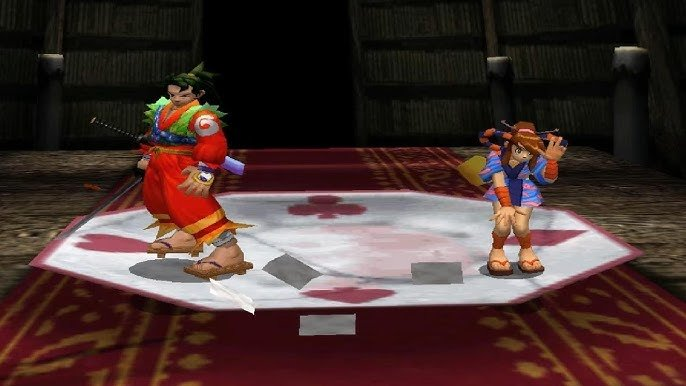
The best-selling console of its generation had the worst memory architecture, the most technically sound one sold the worst of all, and the easiest one to develop for belonged to a company that had never made consoles before. You've probably recognized the PS2, the GameCube, and the Xbox here.
There's a joke that when a developer ported a game from PS2 to Xbox, the first thing they did was throw out the memory-management system and write a new one from scratch, because 32 MB plus 4 MB plus 2 MB doesn't fit into 64 MB.
To read this article you won't need to know assembly or to have worked with specific SDKs. It's enough to understand what a pointer is, how the stack differs from the heap, that rendering geometry in parallel with updating it is a bad idea, and that classic GPU and CPU access patterns load memory differently.
Wherever there's pseudocode in the text, it's there to illustrate a concept, not as ready-to-compile code. I've half-forgotten the exact constants and buffer names on each platform, but the working pattern was always roughly the same.
Why memory architecture matters at all
A processor does exactly one thing: it takes data from memory, changes it somehow, and puts the result back into memory. Everything it does is in one way or another tied to reading from and writing to memory, but not all memory is equal, and different physical types of memory work at fundamentally different speeds, with different bus widths and different addressing constraints.
So when a processor is forced to wait for a response from slow memory, it does nothing useful. Such empty cycles are called stalls; they directly eat performance, and developers try their hardest to get rid of them, but the battlefield keeps shifting one way or another. On a PC with multi-level caches, most stalls are hidden by the hardware — "hidden" here should be read in both senses: both as in "averages out the data-access time" and as in "good luck figuring out why a stall appeared." On consoles, stalls were historically fought by reducing the layers between the hardware and the SDK and with various sets of caches or similar mechanisms.
On early consoles there were almost no caches, and the developer had to think for themselves about where the processor reads data from at each particular moment. And all the decisions in console memory architecture across eras are just different answers to one and the same question: how to give the processor data fast enough on a limited budget. The answers changed from generation to generation, which often explains why code written for one console ports to another with problems or requires serious rework.
Atari 2600 and the 8-bit wonders of the 80s
The Atari 2600 launched in 1977 with a MOS 6507 processor at 1.19 MHz and 128 bytes of RAM. 128 bytes of available memory was little even then, but Atari decided that 128 bytes would be enough for everyone. The cartridge ROM held up to 4 kilobytes, although bank-switching schemes later appeared that extended the address space. There was no dedicated video processor in the modern sense; the picture was generated by the TIA (Television Interface Adapter) chip, and the developer had to synchronize their code with the electron beam, literally working out on a sheet of paper where the beam would physically be at a given moment of the frame.
The TIA had neither a video buffer nor a frame buffer; the signal was generated on the fly, and if the right data wasn't written to the right registers at the right moment, glitches (visual artifacts) appeared on the screen.
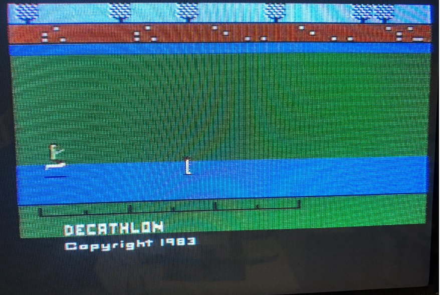
One foot here, the other there
The game loop of the Atari 2600 looked roughly like this:
VERTICAL SYNC (3 lines)
write WSYNC // wait for the line
write VSYNC = 1 // start of frame
write WSYNC
write VSYNC = 0
VERTICAL BLANK (37 lines)
// all the game logic: movement, collisions, AI
// there are 2280 CPU cycles for logic
VISIBLE LINES (192 lines)
for each line:
write WSYNC // sync with the beam
write background color // make it before the line starts
update sprite position // strictly on the right cycles
write sprite data
HORIZONTAL BLANK
// a little more time for extra logicThe vertical blank (VBlank) is the time while the electron beam returns from the bottom-right corner of the screen to the top-left to start a new frame, and in an analog TV the beam is blanked at this moment so as not to leave a visible diagonal line on the screen. On the Atari 2600 this period lasts 37 lines, and it's the only time the program can do game logic without worrying about what's happening on screen, because the beam isn't drawing anything visible anyway.
The horizontal blank (HBlank) is the same thing but at the end of each line: the beam reaches the right edge, is blanked, and returns to the left edge to start the next line, and in that short gap the processor has a few cycles for extra computation between drawing lines.
Developing for the Atari 2600 was essentially programming for a real-time system, only without an operating system, forcing you to count cycles by hand. If the logic in the vertical blank took 10 cycles more than allowed, the next line was drawn incorrectly.
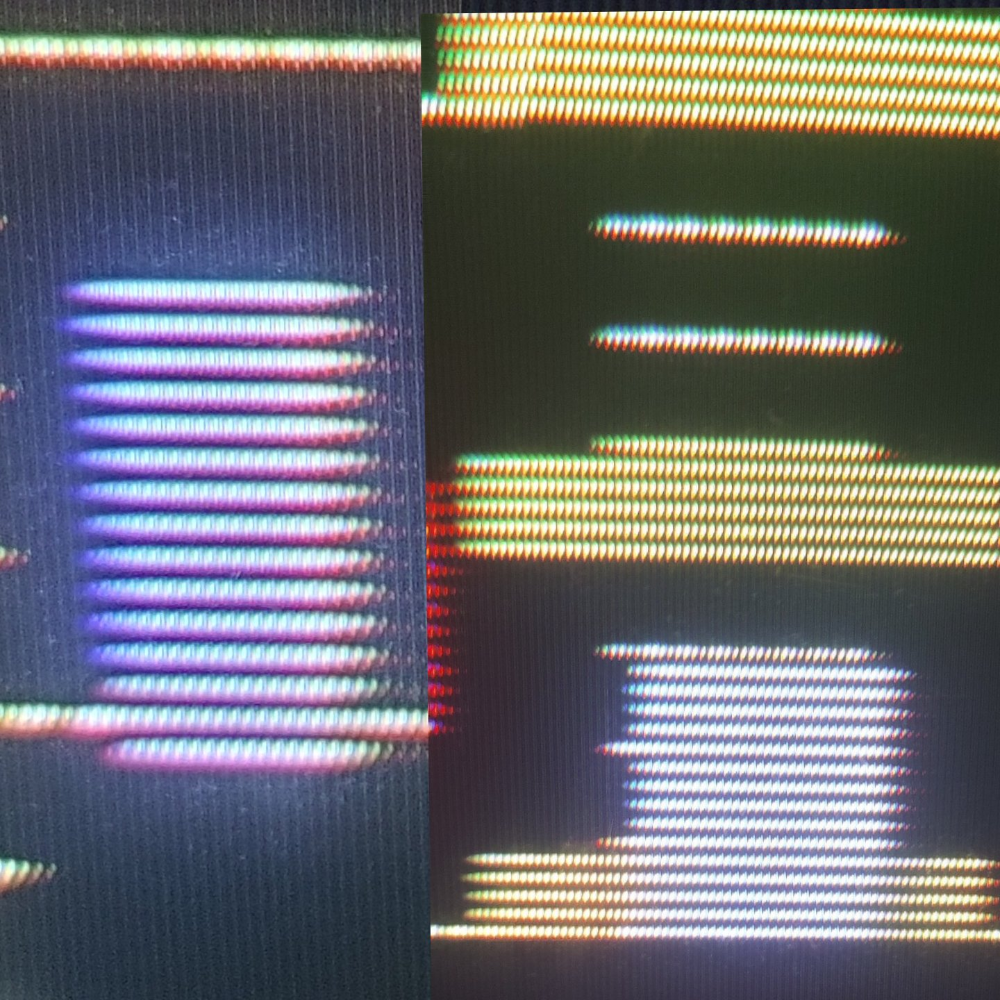
Didn't quite manage to fill the line buffer in time
Remember the 128 bytes? Well, they were split between the stack and game variables. The stack usually took 20–32 bytes, and not all that much was left for everything else — like object positions, the score, state flags, and level data.
The cartridge ROM was executable code that the processor read directly and executed right away. There was no loading into RAM, because there was simply nowhere to load it, and this also meant that any self-modification of the code was physically impossible, because the code was burned into the chip. There was also such a thing as hacking lookup tables in ROM, but it was more of an optimization tool and the domain of the geeks of that time.
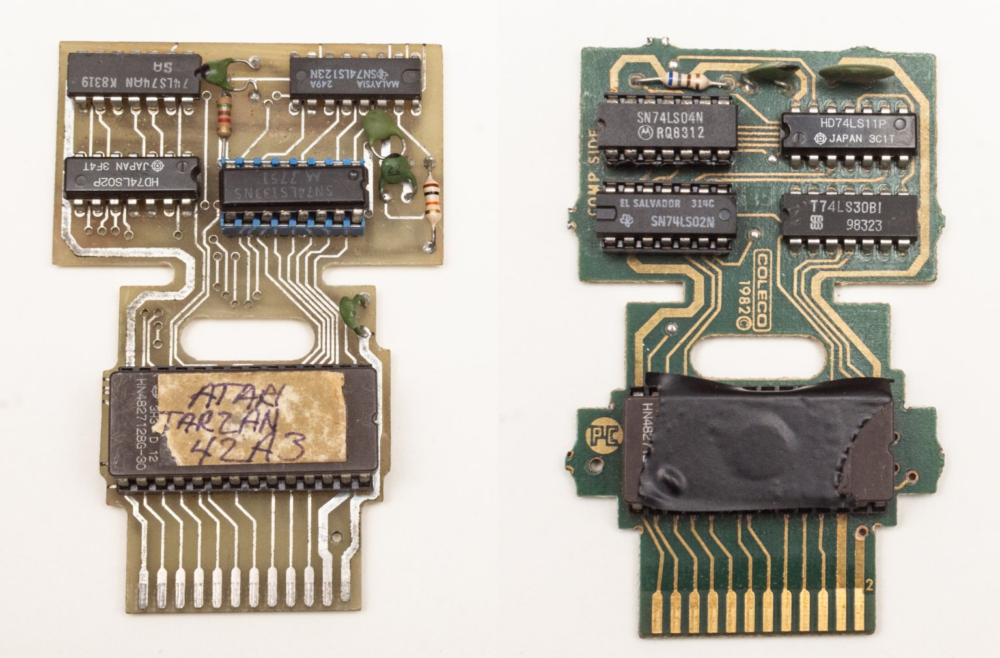
Since every CPU cycle counted, one way to squeeze more performance out of the hardware was to store precomputed tables of values in ROM instead of computing them in real time, because reading a byte from a table is one instruction, whereas a sine or a multiplication is several cycles that might not fit in the blank. So typical tables contained sprite positions, sine values for bobbing animation, precomputed collision masks, colors for sky or water gradients, sound-generation data. All of this had to fit into 4 kilobytes of ROM, so saving on tables simultaneously meant a war over every byte with the game's own data.
It was considered especially elegant to build tables so they overlapped each other, where the same region of ROM is read at an offset and yields different data depending on the start address, which let you store several logical tables in the space of one physical one.
NES, Mega Drive, SNES (1985–1995, 8-bit to 16-bit)
With the arrival of the NES (1983 in Japan, 1985 in the US) it became possible to separate drawing the screen from processing logic. The console had a PPU (Picture Processing Unit) that got its own separate 2-kilobyte VRAM and generated the image by itself. Main RAM also grew to 2 kilobytes. Cartridge data was kept separate too: PRG ROM (code) and CHR ROM (tiles), and the developer could explicitly control what was read from where. This split into a CPU side and a GPU side of memory held, with variations, all the way up to the PS3: data on the CPU side is processed by the processor, data on the GPU side by the video chip, and transferring between them was a separate task. The SNES (1990) used a similar scheme, adding a specialized DSP for scaling and rotating sprites.
Another representative of the generation (the Sega Mega Drive, 1988) carried a processor at 7.67 MHz, already 64 kilobytes of main RAM, 64 kilobytes of VRAM, and a separate Z80 for sound with 8 kilobytes of its own memory.
NES:
CPU RAM: 2 KB (mirrored up to 8 KB in the address space)
PPU VRAM: 2 KB (nametables and attributes)
CHR ROM/RAM: 8 KB on the cartridge (tiles)
OAM: 256 bytes (sprite data)
Cartridge PRG/ROM: up to 512 KB
SNES:
Work RAM: 128 KB (main RAM)
VRAM: 64 KB (tiles, tilemaps)
CGRAM: 512 bytes (palette — 256 colors, 2 bytes each)
OAM: 512 + 32 bytes (sprite data)
Cartridge ROM: up to 4 MB with bank-switchingThe SNES stores 256 entries of two bytes each, that is 512 bytes total, but this doesn't mean you can show 256 arbitrary colors on screen at once, because internally those 256 entries are rigidly split into palettes, and each background layer or sprite can use only its own palette as a whole, not picking colors from a shared pool.
For background layers there are 8 palettes of 16 colors, for sprites another 8 palettes of 16 colors, and index zero in each palette is reserved for transparency and gives no visible color, which leaves 15 real colors per palette instead of 16. In practice this meant artists didn't just draw a picture, but chose which exact colors would go into each palette and how to distribute characters and backgrounds among the available slots, because two sprites using different palettes could stand next to each other on screen but couldn't share a color from another's palette, even if that color was physically present in CGRAM.
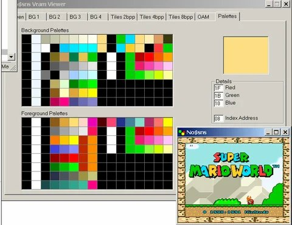
The developer had to work with several address spaces at once, writing CPU RAM data into one address range and video-chip data into another. VRAM was accessible to the processor at any time, but you could only write to it during the blank period; otherwise the PPU and CPU accessed the same bus simultaneously and the data got corrupted.
The problem of shared bus access was fundamental to all consoles of that period. On the NES and SNES it was solved by simply giving the PPU priority over the bus during active drawing, and if the CPU tried to write data into VRAM at that moment, the result was unpredictable. Some bytes could land at wrong addresses, some were lost, and random tiles or color distortions appeared on screen. This wasn't a bug in the hardware designers' understanding — it's simply cheaper to time-share the bus than to give each chip separate memory with independent access, and the developer was obliged to know this and plan all video-memory work strictly around the blank periods.
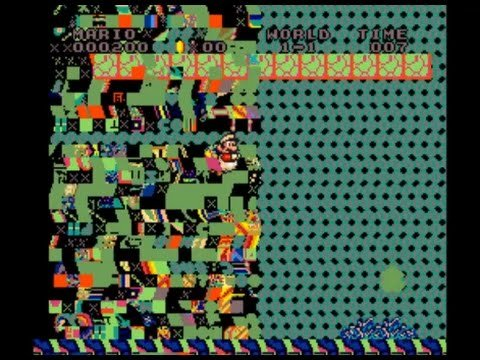
On the NES the CPU address space was 64 KB, but there was only 2 KB of physical RAM, with the rest of the space filled by mirrors, PPU registers, APU registers, and the cartridge; moreover the PPU had its own separate 16 KB address space that the CPU couldn't address directly at all, only through eight special registers. Writing to VRAM looked like sequentially writing the address into the PPUADDR register and then the data into PPUDATA, which by itself created a problem: the address register was two bytes but was written via two consecutive single-byte operations, and if an interrupt occurred between them, the state of the internal address counter got knocked off and the next write went to the wrong address.
On the SNES the architecture was made more complex with three separate buses: the A-bus for the cartridge and Work RAM, the B-bus for peripheral registers including the PPU, and the CPU's own internal bus. There was also a separate DMA controller that could move data without the processor's involvement, which made it possible to start a tile transfer into VRAM via DMA at the beginning of VBlank and, while the data is in flight, do game logic — but there was a catch here too.
DMA blocked the CPU for the duration of the transfer, and if the amount of data exceeded the available VBlank time, the PPU started drawing before the DMA finished, and the lower part of the screen got garbage instead of the correct tiles.
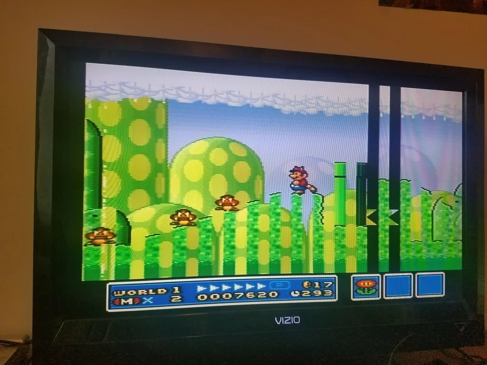
Historically it was precisely these constraints that gave rise to a whole genre of technical tricks that studios used, calculating how many cycles a DMA operation takes, how many blank lines are available at a given TV frequency, and splitting a data transfer across several frames if it didn't fit into one VBlank. Tile loading happened gradually, and it all looked like the level running with no visible pauses.
PS1, N64, and the first 3D games (1994–1999)
The mid-90s went under the banner of 3D, setting console architects the corresponding task of rendering three-dimensional geometry, but, as usual, each console solved it differently.
The PS1 did rasterization through a fixed pipeline with affine texture mapping, where textures were stretched onto polygons without perspective correction. This was a deliberate simplification for the sake of speed.
The result is visible in any screenshot of a PS1 game: textures "swim" and deform as the camera moves, especially on large polygons, because affine mapping doesn't account for the far edge of a polygon being physically farther from the camera than the near one. The PS1 also had no depth buffer (z-buffer), and the polygon draw order was determined by sorting on the center, which produced the classic artifacts where polygons "poked" into each other or were drawn in the wrong order.
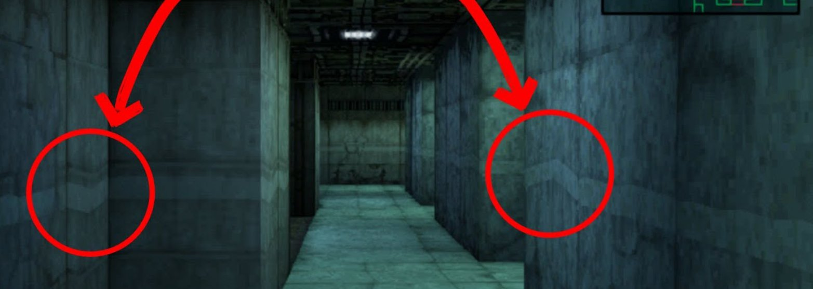
An explanation
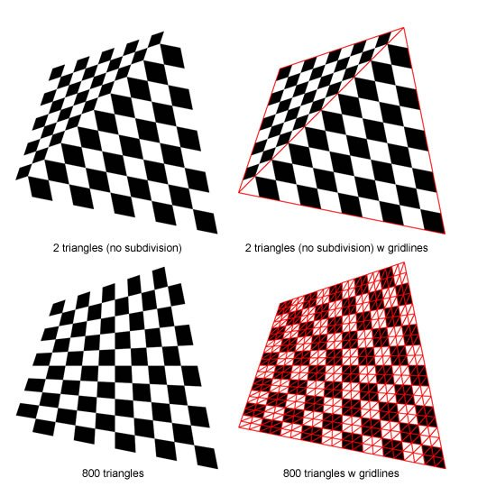
But in exchange the PS1 had fast and predictable rasterization, and developers quickly learned to hide affine-mapping artifacts by subdividing polygons into smaller ones.
The N64 went a different way and put in a Reality Co-Processor with real perspective texture correction, a z-buffer, and trilinear filtering, that is, technically the N64 drew geometry more correctly, textures didn't swim, and polygons didn't cut through each other. But you had to pay for this with a tiny 4 KB texture cache inside the RCP, and any texture that didn't fit entirely into that cache caused an expensive data transfer from main memory over a slow bus.
So you had to either use tiny textures or give them up altogether in favor of flat-shaded polygons, which gave the recognizable "plasticine" look of N64 games.
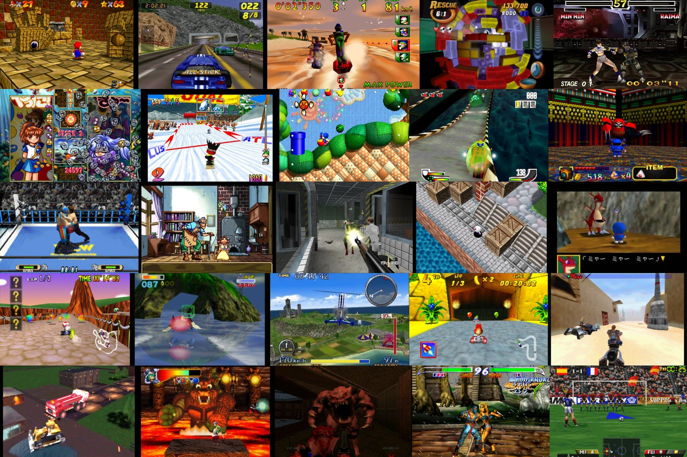
A fundamental difference was also in how cartridges versus CDs affected the whole approach to development. The PS1 with its CD could store huge amounts of textures and audio and load them as needed, which compensated for the rasterizer's technical limitations with the ability to use highly detailed textures on every object, whereas the N64 with a cartridge had fast data access but a hard cap on volume and a small RCP texture cache, literally not allowing detailed textures either by cache size or by cartridge capacity.
The fast-but-slow RDRAM on the N64
RDRAM gave very high peak bandwidth, around 562 MB/s, which was impressive for 1996. But it had high latency on random access: if the processor read data sequentially it did so quickly, but if it jumped around random addresses — very slowly.
RDRAM appeared on the N64 as the result of joint work between Japanese console makers and the engineering genius of Silicon Graphics, which took part in designing the console's architecture. Standard DRAM ran at 60–70 MHz and gave bandwidth on the order of 100–150 MB/s, which was catastrophically insufficient for 3D graphics, which needed to simultaneously read geometry, textures, and the z-buffer and write the result into the framebuffer.
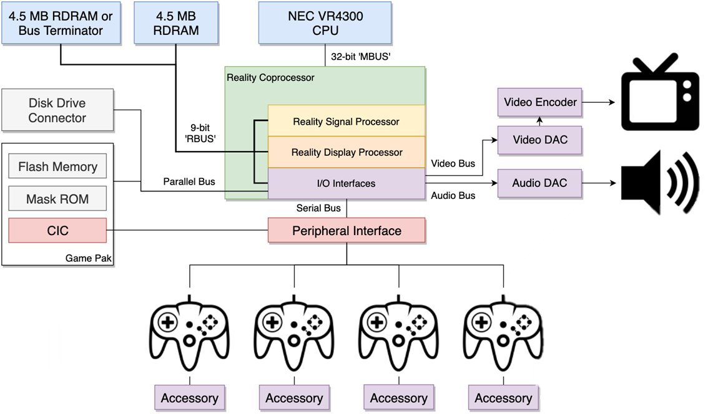
Rambus proposed a solution: instead of a wide parallel bus of 32 or 64 bits, use a narrow serial bus of 8–16 bits, but at a very high frequency and with request pipelining. The peak bandwidth came out impressive when the data flows as a stream without pauses.
Silicon Graphics chose RDRAM for the console because it had a lot of experience with such memory and built its graphics workstations precisely around streaming data processing, where the graphics pipeline sequentially reads vertices, transforms them, rasterizes, and writes pixels, and in this model RDRAM really did work well.
The problem was that real game workloads are never purely streaming: the processor spends 60% of the time reading code from one place, 20% reading data from another, and another 20% writing to a third, and most of these accesses are random. But with RDRAM each such random access required initializing a new burst request, and the latency of that initialization piled up like heavy stones of waiting in the cart of performance.
N64 game developers quickly discovered that writing code that actually utilizes the claimed 562 MB/s under real conditions is practically impossible, and the real effective bandwidth in game scenarios was closer to 200–250 MB/s, that is slightly better than the PS1 with its ordinary DRAM, but not many times better as it sounded in marketing presentations. The gap between peak and real bandwidth became one of the reasons the N64 was perceived as a hard-to-master platform, despite technically superior hardware.
To get the claimed throughput, you had to organize geometry to minimize random access: use triangle strips instead of indexed meshes, sort vertices by order of use, and pre-process textures on the build farm so they lay sequentially in memory.
// This worked well with sequential reads
for (int i = 0; i < vertex_count; i++) {
process_vertex(vertex_array[i]); // stride 1, the cache is happy
}
// This worked poorly with random access through the index buffer
for (int i = 0; i < index_count; i++) {
process_vertex(vertex_array[index_buffer[i]]); // cache miss on every vertex
}Intel stepped into a similar mess in 1999, when it signed an agreement with Rambus and tried to make RDRAM the standard for the Pentium 4, which ended in a loud failure for the same reasons: high price, high latency on random access, and a gap between marketing numbers and real performance in ordinary applications, after which the market settled on DDR for good and the story of RDRAM as a mass standard ended there.
Dreamcast: a console from the future
The Dreamcast turned out to be one of the most unusual consoles of its time precisely because its memory and rendering architecture looked more like a prototype of the next generation (PS2/Xbox) than a direct competitor to the late-90s PlayStation and Nintendo.
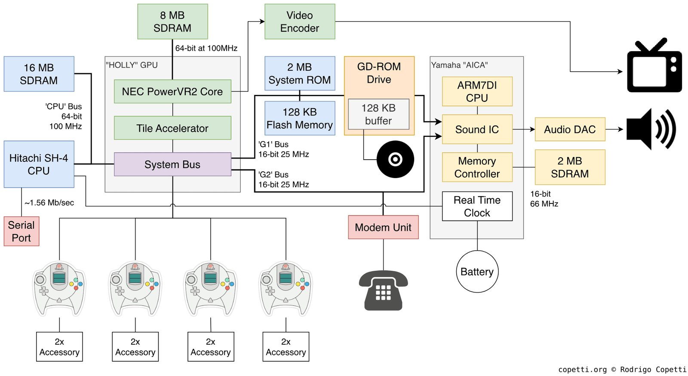
Released in 1998, the console used a Hitachi SH-4 processor at 200 MHz and a PowerVR2 graphics chip based on a tile renderer, which almost no mainstream game developer regarded as a viable solution.
Most GPUs of that era worked on a "issue a command — draw it" scheme, in which each polygon was rasterized almost immediately after processing, which meant constant accesses to external memory.
If several polygons overlapped the same pixel, the video chip read and overwrote the same region of the frame buffer and Z-buffer several times. The PowerVR2, on the other hand, first collected the frame's geometry, then split the screen into small tiles, and only after that rendered each tile separately, culling invisible polygons in advance.
This allowed a sharp reduction in the number of writes to external VRAM and lowered the demands on memory bandwidth, which for the late 90s, with not the fastest memory, was a very good technical solution.
So with a relatively modest amount of memory the console often demonstrated high performance and a very clean picture, especially in scenes with a lot of opaque geometry.
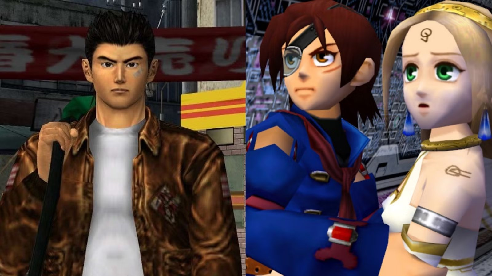
However, the tile renderer changed not only the internal workings of the GPU but the developer's very model of thinking, and techniques considered standard on the PlayStation or PC of the time didn't work or worked incorrectly.
Large semi-transparent surfaces, multipass rendering, and particle systems became unexpectedly expensive, because transparency destroyed the advantages of this approach: the GPU couldn't discard hidden pixels in advance, which led to additional passes and more intensive memory use.
As a result it turned out that the performance problem is increasingly determined not by the number of arithmetic operations but by the amount of data that needs to be moved between the GPU and memory.
Twenty years later practically all mobile GPUs, including Apple GPUs, Mali, and Adreno, would arrive at very similar tile architectures, but for a different reason: the cost of accessing memory, especially in terms of power consumption, would turn out to be far more important than the cost of computation.
PS2, Xbox, GameCube (2000–2005)
The PS2, Xbox, and GameCube came out within the same generation, but had such different memory architectures that a port from one platform to another often required rewriting the resource-management system from scratch.
The PS2 had three separate "islands" of memory: 32 megabytes of main RDRAM for the EE (Emotion Engine), 4 megabytes of VRAM for the GS (Graphics Synthesizer), and 2 megabytes of IOP RAM for I/O, sound, and the CD drive. Each island was served by its own bus, and transfer between them was an explicit operation via DMA.
It's a historical fact that developers with N64 experience landed on the PS2 in a familiar, if more complex, environment, because Nintendo consistently built its consoles around a similar idea — that memory isn't a homogeneous pool but a set of specialized regions with different characteristics — and the N64, with its split between cartridge, main RDRAM, and the RCP texture cache, had already trained them to think in exactly these terms.
On the PS2 the same logic simply became more explicit, and three islands of memory with different speeds, different buses, and explicit DMA transfers between them were conceptually closer and clearer to that Japanese school of game development.
This gave an advantage to N64 veterans, for whom it was natural to build the resource-management system around explicit budgets for each island and to plan DMA transfers in advance, whereas a programmer who came from the PC instinctively tried to abstract away from the physical memory structure and got stalls where they didn't expect to see them.
Approximate data flow on the PS2:
CD/DVD disc
│
▼
IOP (2 MB) ──DMA──► EE Main RAM (32 MB) ──DMA──► GS VRAM (4 MB)
│ │
▼ ▼
EE (CPU Logic) Rendering
VU0 / VU1 (geometry)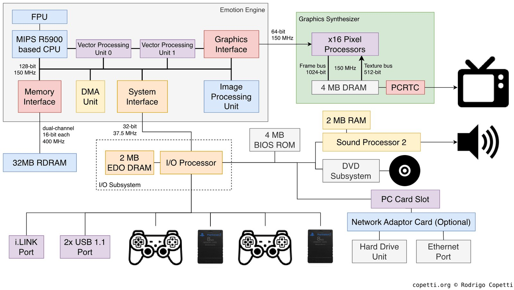
The main feature of the PS2 was a pair of vector units, VU0 and VU1, capable of working in parallel with the main processor. VU0 was tightly coupled to the CPU and used for physics and collisions. VU1 was connected to the GS and handled geometry transformation and primitive preparation.
Each VU had its own small microprogram store: VU0 had 4 kilobytes, VU1 had 16 kilobytes. This meant the developer could write separate programs for the VUs (a compute shader in the modern sense) and uploaded them there before use. This was a form of hardware parallelism available long before it became the norm in PC development with GPGPU, when developers got into their hands the ability to physically execute parallel logic.
// Conceptual scheme of using VU1
vu1_upload_program(skinning_microprogram, vu1_microprog_memory);
vu1_upload_data(vertex_buffer, vu1_input_buffer);
vu1_execute();
// while VU1 transforms the geometry, the CPU does logic
cpu_update_game_state();
vu1_wait_complete();
vu1_kick_to_gs(); // send the result straight to the GSThe Xbox used an ordinary Pentium III-like architecture with a unified 64 megabytes of DDR shared between CPU and GPU. No "islands" — just one address space accessible to everyone from everywhere, and programmers who came from PC development felt at home.
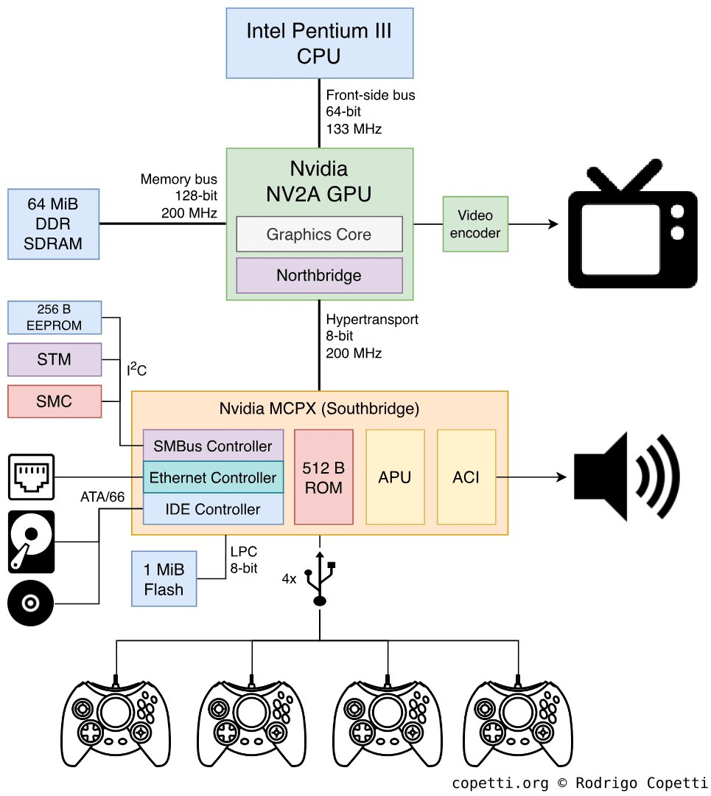
The Xbox was so close to an ordinary PC that Microsoft didn't even hide it. Inside the console was a slightly modified Intel Pentium III at 733 MHz, a graphics card based on Nvidia's GeForce 3, and an ordinary IBM hard drive — that is, hardware you could essentially buy in any computer store with minimal modifications.
This gave obvious advantages when porting games from the PC, which now took weeks instead of months, and the DirectX API was familiar to any Windows developer, so the whole PC development ecosystem moved over to the console almost unchanged. But along with it moved all the problems of the PC architecture too: unified memory, the fight for the bus between CPU and GPU, drops at peak-load moments, cache misses, and so on and so forth.
Along with the developers came the habit of not thinking about memory management explicitly, which led to Xbox games often using resources less efficiently than their competitors on the PS2 or GameCube, which squeezed the maximum out of their specialized architectures.
The last of this trio, the GameCube, could offer 24 megabytes of fast "Splash" SRAM right on the GPU chip (1T-SRAM with very low latency) plus 16 megabytes of external DRAM, also connected to the GPU. The bandwidth of the internal memory was huge, on the order of 9.6 GB/s, which allowed it to compete with the PS2 on performance despite a smaller amount of memory.
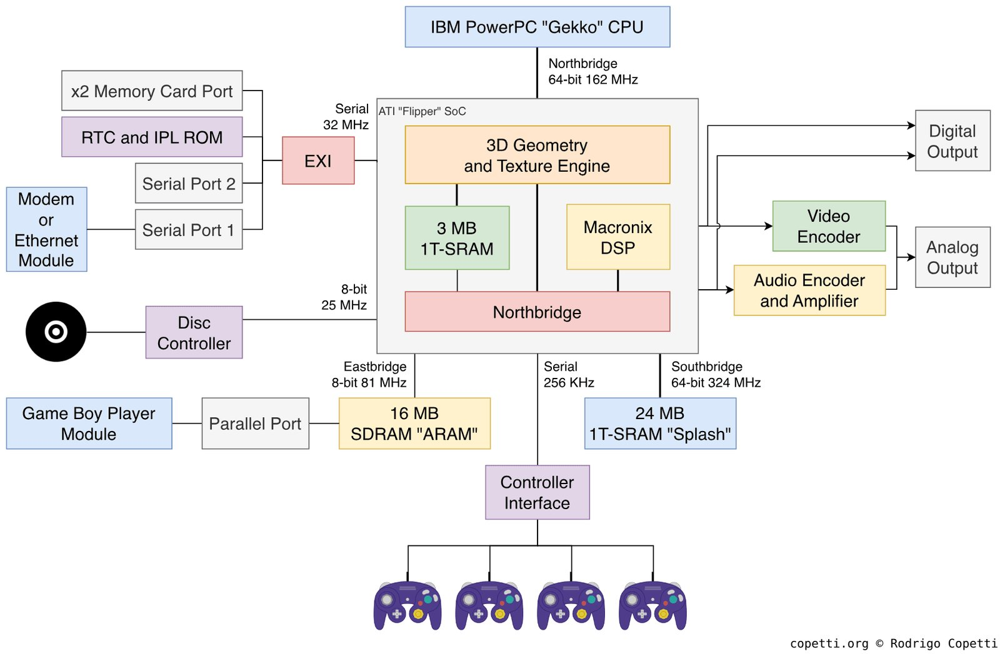
The GameCube's 24 megabytes of Splash SRAM were faster than the competitors' equivalents, and developers who managed to fit an active scene entirely into this memory got noticeably faster rendering than on the PS2 with its 4 megabytes of VRAM, let alone on the Xbox. But 24 megabytes for everything — geometry, textures, working buffers — is very little, and managing this space required special development discipline, which led to complex approaches to working with a frame: keep only the active textures of the current scene in fast memory, and use the remaining 16 megabytes of external memory as a large intermediate buffer for loading from disc.
PS3, Xbox 360, and split memory
The PS3 (2006) and Xbox 360 (2005) came out practically simultaneously by the standards of a new console generation, but had fundamentally different memory models, which made cross-platform development of that era very painful.
The Xbox 360 had 512 megabytes of unified GDDR3 memory with bandwidth on the order of 22.4 GB/s, physically accessible to both the CPU (Xenon) and the GPU (Xenos) with no additional conditions or copies.
The Xbox additionally had 10 megabytes of EDRAM on the GPU chip, which ran at a bandwidth of around 256 GB/s, an order of magnitude faster than main memory, and the entire frame pipeline, including the frame buffer and Z-buffer, happened in this EDRAM.
At the end of the frame the result was copied to main memory for display. Because of the high bandwidth of the EDRAM, the console could do 4x MSAA practically for free, because writing to a 4x-larger buffer cost nothing in terms of bandwidth. On the PS3, where the frame buffer was stored in GDDR3, the same MSAA cost noticeably more. But the 10-megabyte limit — a 1280×720 @ 32bpp frame buffer + a 32-bit Z-buffer = 7.03 MB, and if the developer wanted to render at a non-standard resolution or added another heavy pass or target, the budget ran out and you had to go to slow main memory.
The PS3 had 256 megabytes of XDR DRAM for the Cell processor and separately 256 megabytes of GDDR3 for the GPU (RSX). The same total as the Xbox 360, but it was physically split, and the processor could read video memory only through a PCIe bridge, while the RSX could read system memory when the CPU wasn't doing so — which was, of course, slow.
Cell BE (3.2 GHz) RSX (GPU)
│ │
├─ PPU (main core) ├─ 256 MB GDDR3 VRAM
│ └─ SPU 0...5 │ (bandwidth: ~22.4 GB/s)
│ (local stores │
│ 256 KB each) │
│ │
└─ 256 MB XDR DRAM │
(bandwidth: │
~25.6 GB/s for Cell) │
│
───────── PCIe x16 ─────────────────
(bandwidth: ~15 GB/s each direction)In addition, the PS3 processor contained six working SPUs (Synergistic Processing Units), each with 256 kilobytes of local storage (Local Store). An SPU couldn't access main memory directly and worked only with data in its Local Store, requesting DMA transfers there and back with explicit commands.
// How an SPU works
// In the Local Store (256 KB):
// [0..63 KB] input buffer — data to process
// [64..127 KB] output buffer — results
// [128..192 KB] next input buffer (DMA in progress)
// [192..256 KB] SPU code + stack
// Main loop of an SPU task:
while (has_work) {
// While we process the current buffer...
process_data(input_buffer_a, output_buffer_a);
// ...load the next one in parallel
dma_get_async(next_input, main_memory_ptr, INPUT_SIZE);
dma_put_async(output_buffer_a, result_memory_ptr, OUTPUT_SIZE);
dma_wait_all(); // sync before the next iteration
swap_buffers();
}This double-buffering pattern for DMA transfers allowed computation and data transfer to overlap. A well-written SPU task never idled waiting for DMA, while a poorly written one first waited for DMA and often disturbed the main processor with interrupts, then computed, then waited again, working not only slower but also getting in the way of the main logic. The difficulty of writing SPU programs pushed most developers away from this scheme, and many never even opened the SPU documentation, considering it exotic. Only a third of PS3 games used the SPUs, and just a few games fully realized these capabilities.
PS4, Xbox One, and shared unification
The PS4 and Xbox One (2013) did what developers had been asking for since the PS1 era, and both consoles got a single address space with shared memory for the CPU and GPU. This step, which seemed obvious to most developers, became possible thanks to several factors: the Xbox had captured half the console market and could dictate terms to Nintendo and Sony on their historical turf; the x86-64 architecture had become mainstream and cheap; and finally, the last adherents of a proprietary path in architecture had left Sony, and there was no longer anyone to stop the advance of Intel's ideas in the beacon of Japanese console-shipbuilding.
So the PS4 got 8 gigabytes of GDDR5 with a single bus for the CPU (Jaguar, 8 x86-64 cores) and GPU, with bandwidth up to 176 GB/s at peak on streaming data, while the Xbox One got the same 8 gigabytes but split: 5 gigabytes of DDR3 for applications and 3 gigabytes of DDR3 for the system, plus 32 megabytes of embedded ESRAM (again, like the 360's EDRAM, but bigger). The scheme turned out to be more complex than the PS4's, and now it was the Microsoft developers complaining about the need to explicitly manage what goes into the ESRAM.
The Jaguar processor was originally created for low-TDP laptops and tablets, not game consoles, and had relatively small caches, which meant code for the PS4 needed careful cache-friendly data organization, dictating particular data structures, AoS vs SoA, minimal footprints for hot-path structures, and explicit prefetch of hot data. Engines that came from PC development, where developers were used to relying on larger caches, gave predictably poor results on the Jaguar until the appropriate optimizations.
// AoS (Array of Structures) — bad for Jaguar
struct Entity {
float x, y, z; // position
float vx, vy, vz; // velocity
int health;
int type;
char name[32]; // 32 bytes of name get pulled into cache when accessing position
};
Entity entities[1000];
// Updating positions pulls the whole struct into cache,
// even though only x/y/z and vx/vy/vz are needed
// SoA (Structure of Arrays) — good for Jaguar
struct EntityPositions { float x[1000], y[1000], z[1000]; };
struct EntityVelocities { float vx[1000], vy[1000], vz[1000]; };
struct EntityMisc { int health[1000], type[1000]; };
// Updating positions reads only a dense float array,
// a cache line holds 16 positions instead of 1 structThe most important change of this generation was that the need to explicitly copy data between "system" and "video" memory disappeared. On the PS3 a texture first existed in XDR DRAM, then was copied to GDDR3 for the GPU to use, whereas on the PS4 a texture is created once, and the GPU reads it from the same address where the CPU put it.
CPU (Jaguar, x86-64) GPU
│ │
└─────── shared bus ──────────┘
│
8 GB GDDR5 @ 176 GB/s
// No explicit split: both CPU and GPU see one address range.
// The GPU gets the buffer via a handle, not via a separate copy.
CommandBuffer* cb = gpu_alloc_command_buffer();
gpu_set_vertex_buffer(cb, shared_vertex_buffer_handle);
gpu_set_shader(cb, vertex_shader);
gpu_draw(cb, index_count);
gpu_submit(cb);
// the CPU doesn't wait and continues with the next frame's logicThis simplifies both resource management and streaming, but creates another problem. Contention for the memory bus appeared, because the CPU and GPU physically share the same wires, and if the GPU in the middle of rendering is pushing a lot of data while the CPU at the same time wants to load a texture from disk into memory, they start getting in each other's way, and both do their work worse and slower than if it were done as sequential operations.
PS5, Xbox Series, and the SSD as a new level of memory
The main pain of the previous generation was no longer a shortage of VRAM — most games didn't even use half the available RAM/VRAM — but streaming load speed. The PS4 and Xbox One had ordinary HDDs with bandwidth on the order of 100 MB/s, which, with 8 gigabytes of RAM and large open worlds, meant constant streaming, where some resources were loaded while others were evicted.
You had to spend effort on separate, complex systems for prioritizing loads and masking latency for open worlds. This trend in game development didn't go unnoticed, and the PS5 already answered it with a custom NVMe SSD with large caches, bandwidth up to 9 GB/s (with hardware decompression), and a specialized chip for Kraken hardware decompression right on the path from the SSD to RAM.
That is, you could essentially bake the entire level with all its textures, models, NPCs, and other junk into an archive, hand it to the console, and say "put it into RAM starting at such-and-such address," and half a second later have a fully loaded level — which returns us (in terms of responsiveness) to the SNES era, when a level started right after you pressed the start button, with no loading screens or transitions between areas.
The Xbox Series X offered the Xbox Velocity Architecture with a 2.4 GB/s NVMe SSD, a similar hardware-decompression scheme, and direct DMA into memory.
Traditional PS4 (simplified):
HDD (100 MB/s)
│ load
▼
RAM 8GB GDDR5
│ GPU reads textures from RAM
▼
GPU rendering
PS5 (simplified):
NVMe SSD (5.5 GB/s)
│ Kraken hardware decompression
│ direct DMA
▼
RAM 16GB GDDR6 (448 GB/s)
│ GPU reads textures from RAM
▼
GPU rendering
SSD speed grew ~55x.The fundamental change of this generation is that the SSD came to be regarded not as a "slow disk you have to work with task by task" but as another level of memory in the hierarchy. Where the previous generation forced you to build complex streaming systems with prediction and buffers, the PS5 allowed a move to a straightforward model: load what's needed when it's needed, and simply remove what's not needed from the level rather than keeping it in caches for the future.
An interesting situation develops here: developers' emphasis on large open worlds shaped the development of the hardware. Before the PS5, such worlds required visible loading screens at transitions, or small world cells, or clever corridors-of-loading (the "elevators" in Halo, the narrow passages in The Last of Us), which were engineering solutions to mask that the HDD couldn't keep up. And now, with a fast SSD and hardware decompression, the need for most of these tricks has disappeared.
Ratchet & Clank: Rift Apart on the PS5 demonstrated teleportation between worlds without any loading precisely because the SSD loaded the new scene in fractions of a second, just while the transition animation played.
As usual, this didn't go without crutches either. If you port to the PS5 an engine written for the PS4, with its streaming systems one-to-one, and don't use the SSD's capabilities at all, then it gives no tangible gain. You'll just get your 15–20% from the increased hardware power. And many early PS5 games are simply cross-gen projects constrained by the previous generation's memory model: they just loaded faster but didn't change the architecture of their worlds.
The Game Boy generation, and counting bytes again
Let's go back a bit, because besides the big consoles we also have mobile and semi-mobile platforms. They're popular with a very large number of players too, and the situation with them, if not radically different, is still very interesting.
The Game Boy (1989) had 8 kilobytes of work RAM and 8 kilobytes of VRAM. That was more than the Atari 2600 but less than the NES. The Game Boy Advance (2001) brought an ARM7TDMI at 16.78 MHz, 256 kilobytes of internal WRAM, 32 kilobytes of IWRAM (fast, accessible in 1 cycle), and 96 kilobytes of VRAM.
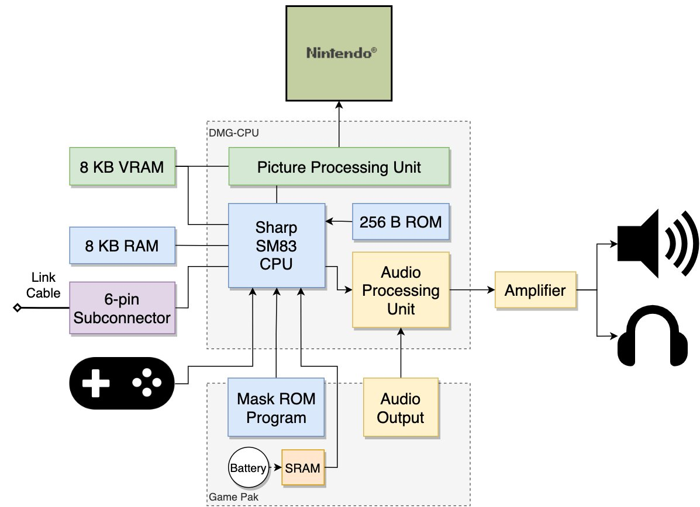
The split into WRAM and IWRAM lets you put critical code into IWRAM for single-cycle access, and everything else into the slower WRAM. The cartridge ROM was accessible too, but with a latency of 3–8 cycles depending on the access mode, and many developers copied critical functions from ROM into IWRAM at startup.
// GBA: the difference between running from ROM and from IWRAM
// If a function runs from ROM (the cartridge):
// each Thumb instruction: 3 cycles (3 + wait states)
// each ARM instruction: 4 cycles (1 + 3 for 32-bit ROM access)
// If a function is copied into IWRAM and runs from there:
// each Thumb instruction: 1 cycle
// each ARM instruction: 1 cycle
// Attribute to copy a function into IWRAM:
IWRAM_CODE void critical_update_function(void) {
// this function is copied into IWRAM at startup
}The Nintendo DS (2004) became the first mass-market console with two screens, but for this article its memory architecture is more interesting: an ARM9 at 67 MHz and an ARM7 at 33 MHz, working in parallel with separate tasks.
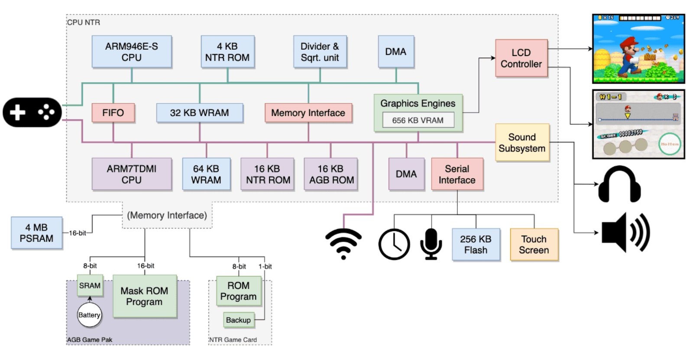
The ARM9 handled game logic and rendering of the top screen, the ARM7 served Wi-Fi, sound, and the touchscreen. The developer had to explicitly distribute tasks between the two processors and manage which RAM each one's code lived in. This was the first "multiprocessor" development for a broad audience of mobile developers, a few years before the Cell on the PS3.
The Switch (2017) uses an Nvidia Tegra X1 chip with 4 gigabytes of LPDDR4 shared between CPU and GPU. The same single-address-space principle as the PS4, only in a portable form factor, and switching between modes (handheld / TV) changes GPU frequencies but not the memory model.
Modern GPUs and the "virtual" memory of the graphics card
By the current console generation, not only the speed of memory had changed but the very idea of how a GPU should work with resources. On early systems the developer almost always thought about memory in physical metrics, because there was a concrete framebuffer, concrete textures and atlases, and a concrete amount of video memory inside which all the active resources of a scene had to fit at once.
Modern GPUs work closer to the CPU's virtual-memory model, and now a texture no longer has to exist entirely in VRAM at all; the engine can load only those parts of textures that are actually visible in the current frame.
This is called virtual texturing, sparse textures, and residency management, and it's built around the idea that video memory is no longer the place where all the scene's data is permanently stored, but becomes a fast cache for the resources the GPU needs right now. This matters for modern open-world games, where the full set of textures and geometry can take hundreds of gigabytes and physically won't fit into any video memory.
The next-generation SSD (on a hypothetical PS6 they'll make such a model physically feasible): whereas on the PS3/PS4/PS5 we still have to worry about loading data from storage, predicting future loads, or building complex streaming systems around a slow disk (a modern SSD, fast as it is, is still not as fast as needed), future PS6s — and partly already the PS5 and Xbox Series — allow a move to demand-driven streaming, in which data is loaded at the moment of its actual use.
Shared memory also failed to solve all the problems, although it might seem that a single address space completely eliminates the complications of CPU–GPU interaction. But even if both processors work with the same memory address, each still has its own caches, which means data doesn't automatically become visible to the other side immediately after a write.
If the CPU updated a particle buffer but didn't perform the necessary flush or invalidate operations, the GPU will keep reading the old version of the data from its cache, and this often shows up as strange single-frame artifacts, unstable frames, or visual flickering.
This task is partly solved by modern low-level APIs like Vulkan, DX12, and Metal, requiring the developer to explicitly describe resource ownership, synchronization points, and barriers, but conceptually this problem isn't solved — we've simply moved the hardware's problems up to the developer's level.
Sony sees the solution to this problem in yet another layer of DMA, only now on a separate bus between CPU and GPU, while Microsoft and Apple see it in unifying the APU so it could handle both sets of tasks. But the fundamental task remained the same: the data has to end up in the right place, at the right moment, and in the right form, otherwise you can forget about performance.
P.S. As @XenRE correctly noted, without a mapper (NROM) the CPU address space is rigidly limited to the range 0x8000–0xFFFF, which gives a maximum of 32 KB for PRG and 8 KB for CHR via the PPU range 0x0000–0x1FFF. The figure of 512 KB refers to the MMC3 mapper as one of the most widespread in the commercial NES library (Super Mario Bros. 3, Mega Man 3–6, Contra, and hundreds of others). MMC3 switches PRG and CHR banks on the fly, bypassing the physical bus limitations. There is no theoretical limit for PRG/CHR ROM with a mapper, and it all comes down only to the specific mapper scheme.
← All articles